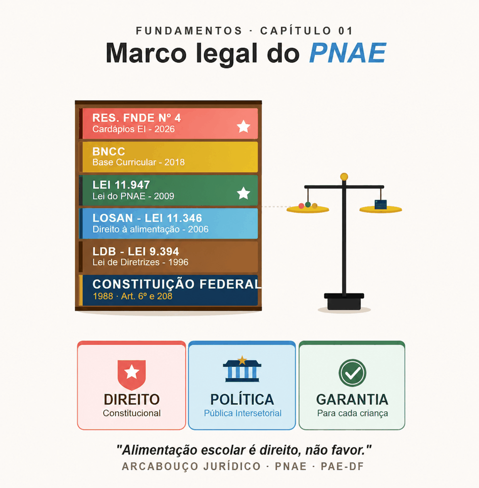

Marco
legal do PNAE
Alimentação escolar é direito, não favor. Conheça o arcabouço jurídico que sustenta cada refeição servida.

Setenta anos da alimentação escolar no Brasil.
Clique em cada data para ler o que mudou — da merenda higienista de 1955 à Resolução FNDE nº 4/2026.
Programa Nacional de Merenda Escolar ↗
Criado por decreto, o PNME nasce com caráter exclusivamente nutricional — distribuir alimentos para combater a desnutrição. Ainda não havia qualquer dimensão pedagógica atrelada à alimentação escolar.
Decreto n� 37.106/1955Constituição Federal ↗
A alimentação torna-se direito social no Art. 6º. O atendimento em creche e pré-escola (0 a 5 anos) vira dever do Estado no Art. 208. Pela primeira vez, a educação infantil está na Constituição.
CF/88 � Arts. 6� e 208LDB · Lei nº 9.394 ↗
A Educação Infantil é firmada como primeira etapa da Educação Básica. O Art. 29 define a finalidade do desenvolvimento integral da criança até 5 anos — físico, psicológico, intelectual e social. Posiciona a alimentação no núcleo da finalidade da EI, não como atividade-meio.
Lei nº 9.394/1996 · Arts. 4º, 29, 30, 31Lei Orgânica de Segurança Alimentar e Nutricional (LOSAN) ↗
Consolida o Direito Humano à Alimentação Adequada: alimentação saudável, acessível, suficiente e culturalmente referenciada. A Segurança Alimentar e Nutricional (SAN) passa a orientar todas as políticas alimentares do país.
Lei nº 11.346/2006Lei 11.947 · PNAE + DCNEI ↗
A Lei 11.947 estende o Programa Nacional de Alimentação Escolar (PNAE) a toda a educação básica e torna a Educação Alimentar e Nutricional (EAN) componente curricular obrigatório, com mínimo de 30% (hoje 45%) dos recursos em agricultura familiar. No mesmo ano, a Resolução CNE/CEB nº 5/2009 — Diretrizes Curriculares Nacionais para a Educação Infantil (DCNEI) firma a criança como sujeito histórico de direitos e adota interações e brincadeira como eixos da Educação Infantil.
Lei nº 11.947/2009 · Res. CNE/CEB 5/2009BNCC + Currículo em Movimento DF (2ª ed.) ↗
A Base Nacional Comum Curricular (BNCC) consolida 6 Direitos de Aprendizagem e 5 Campos de Experiência — “alimentar-se” entra como prática pedagógica intencional (p. 39). No DF, a 2ª edição do Currículo em Movimento contextualiza essa base — adiciona os Eixos Integradores Educar/Cuidar + Brincar/Interagir e dedica o Cap. 9.1 à alimentação na Educação Infantil.
BNCC · Currículo em Movimento DF · 2018Resolução FNDE nº 4 ↗
O novo Manual de Cardápios recalibra metas e per capita: 45% em agricultura familiar (com 50% destinados a mulheres produtoras), 85% em alimentos in natura ou minimamente processados, máximo de 10% em ultraprocessados e processados, R$ 1,57 per capita/dia em creche e tempo integral. EAN passa a ser componente do PPP. Bebês e crianças de 0 a 3 anos: sem açúcar adicionado.
Res. FNDE nº 4/2026O que mudou em 2026.
A nova resolução do FNDE recalibra metas, percentuais e per capita do PNAE — e formaliza a EAN como componente do PPP. Os números abaixo são o novo piso operacional dos cardápios.
Antes 30%. Com 50% destinados a mulheres produtoras.
Antes 75%. Inclui minimamente processados.
Limite máximo dos recursos. Não é meta — é teto.
Creche em tempo integral. Antes R$ 1,07.
Componente do processo de ensino-aprendizagem.
Três movimentos para a PP.
Pelas DCNEI e pelo Currículo em Movimento do DF (2018), o documento institucional da escola é a Proposta Pedagógica (PP) — termo que substitui PPP. Estes três movimentos levam a lei à prática.
Cite a base legal
Na PP e nos planos de ação, faça referência explícita à Lei de Diretrizes e Bases da Educação Nacional (LDB) — Art. 29, à Lei 11.947/2009, à Res. Fundo Nacional de Desenvolvimento da Educação (FNDE) 4/2026, à BNCC e à Educação Alimentar e Nutricional (EAN) como componente curricular.
Formalize o nutricionista como parceiro pedagógico
Identifique na PP o(a) nutricionista da regional Responsável na unidade — em conformidade com a Res. Conselho Federal de Nutricionistas (CFN) 789/2024. Registre nome, contato e carga horária no plano anual. É essa formalização que transforma a nutricionista de visitante eventual em coautora do currículo escolar.
Agende o momento no ano letivo
Inclua na Proposta Pedagógica os momentos-chave de educação alimentar do ano letivo — Semana da Alimentação Saudável, encontros com a família, feiras pedagógicas e relatórios periódicos da nutricionista. Definir as datas no início do ano garante articulação com o planejamento da escola.
“Comer é também um ato cultural, político e pedagógico — e a escola pública tem o dever e a alegria de transformá-lo em aprendizagem significativa para todas as crianças.”
Inspirado em Paulo Freire · Pedagogia da Autonomia · 1996Quatro textos que você precisa conhecer.
Constituição Federal
Alimentação como direito social fundamental. Creche e pré-escola para 0–5 anos como dever constitucional do Estado.
Acessar documento → Lei 11.947/2009Lei do PNAE
Alimentação escolar como todo alimento oferecido no período letivo. Mínimo 45% em agricultura familiar.
Acessar documento → Res. FNDE nº 4/2026Manual de Cardápios
Regula composição por etapa. Proíbe ultraprocessados. Define porções e referências nutricionais para a EI.
Acessar documento → DCNEI · Res. 5/2009Diretrizes da EI
Criança como sujeito histórico de direitos. Indissociabilidade do cuidar e educar — alimentação é pedagógica por lei.
Acessar documento →“Alimentação escolar é todo alimento oferecido no ambiente escolar durante o período letivo.”
Lei nº 11.947/2009 ↗